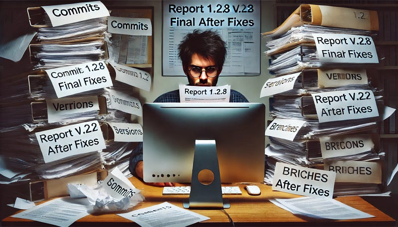

R You Ready? Git Your Code Under Control!
R You Ready? Git Your Code Under Control!

Hey there, ready to get your R code under control? Whether you’re working on your own or in a small team, managing your code can sometimes feel like juggling too many things at once. But don’t worry — there’s an easy way to stay on top of everything. That’s where Git comes in.
Think of Git like a trusty sidekick for your coding adventures. It helps you keep track of every little change, save different versions of your work, and easily rewind if things don’t go as planned. Plus, if you’re working with others, Git makes collaboration a breeze. No more messy files or accidental overwrites!
Now, I know what you might be thinking — “Do I really need this if I work solo?” Absolutely! Even when you’re the only one writing code, Git gives you the peace of mind that your work is safe, and you can always go back to earlier versions if something breaks.
And here’s the best part: using Git with RStudio is super simple. You don’t need to touch the command line unless you want to. RStudio has a nice, intuitive Git tab that lets you do everything with just a few clicks. We’ll walk through how to set it up, what the key Git commands mean, and how you can start using Git today to simplify your workflow. Trust me, you’ll wonder how you ever coded without it!
Why Use Git? The Benefits for R Users
Alright, let’s talk about why Git is a game-changer for your R projects. You might be working on an analysis one day, tweaking some code the next, and suddenly, you need to go back to an earlier version of your script because something went wrong. Without version control, that can turn into a bit of a nightmare — trying to remember what changed and when, or worse, redoing hours of work.
Git helps with all that and more. Here’s why you’ll want it by your side:
Version Control Made Easy
Think of Git like a detailed logbook for your code. Every time you make a change, you can “commit” that change to your log. That way, you always know what you changed and why. If something breaks down the line, you can scroll back through the history and undo the specific change that caused the issue. It’s like having a time machine for your code!
In RStudio, using Git is even easier. You don’t have to remember complex commands — there’s a visual Git tab where you can see all your changes and commit them with just a couple of clicks. It’s a lot more straightforward than you might think.

And when you click any of these buttons, a modal window appears.

If you prefer working in the console, no problem. You can run the git commit command there:
git commit -m "Brief description of what changed"Safety Net for Your Code
Git provides peace of mind by saving different versions of your code as you go. If something goes wrong, you can easily compare changes between versions, or revert files that have issues. While RStudio doesn’t offer a one-click rollback feature, you can still see the differences between file versions using the Diff tool.
The Diff feature in RStudio’s Git tab highlights exactly what’s been changed in your code line by line. If you spot a mistake, you can easily undo changes before committing them, or selectively stage only the lines you want to keep.

Here’s how you’d use it in the console:
git diffThis command shows the differences between your working directory and the latest commit. It’s a lifesaver when you need to see what’s changed without committing right away.
For small adjustments, you can also use the Revert button in the RStudio Git tab to undo local changes before they’re committed. It’s like hitting “undo” in your editor, but for your version history.
For console:
git checkout -- <file>This command reverts a file back to its previous state.
Smooth Collaboration
If you’re working with a team, Git takes care of version conflicts and merges automatically. No more passing files back and forth or worrying about overwriting someone else’s work. Even if you’re flying solo, Git is still a huge help. You can create separate “branches” for different ideas, test them out, and then merge the best solution back into your main project.

Git in RStudio or from the command line works the same way, so you get the best of both worlds.
Getting Started with Git in RStudio: Simple, Visual, and Intuitive
So, you’re ready to dive into Git, but the idea of typing commands into the terminal feels a bit daunting? No worries — RStudio has you covered. The good news is that you don’t need to touch the command line to use Git effectively. RStudio offers a visual Git interface that makes the whole process smooth and intuitive, even if you’re brand new to version control.
The Git Tab in RStudio: A Visual Dashboard for Version Control
The Git tab in RStudio acts as your version control dashboard. It’s like having all the essential Git commands right there at your fingertips — no typing, just clicking. This tab shows you what’s changed in your project, allows you to stage files, commit your work, and push changes to a remote repository like GitHub.
When you’ve made changes to your files, RStudio automatically detects them and lists them in the Git tab. You’ll see the files that have been modified, and you can decide which changes you want to commit. It’s as simple as selecting the files you want to include and hitting the Commit button.
Setting Up Git in RStudio
Before you start, you need to make sure Git is configured in RStudio. If you haven’t already set it up, don’t worry — it’s quick and painless.
- Install Git: If Git isn’t installed on your computer yet, RStudio will prompt you to install it or help you locate it on your system.
- Link Your Project to Git: To add Git to an existing project, go to the Tools menu, select Project Options, and then click on Version Control. Here, you can initialize a Git repository, which basically means you’re telling Git to start tracking changes in your project.
- Connect to GitHub (Optional): If you want to store your code on GitHub (highly recommended for backups and collaboration), you can link your RStudio project to a GitHub repository. This way, you can push your changes to GitHub with just a click.
Point-and-Click Simplicity: Key Git Features in RStudio
Here’s a quick rundown of the most common actions you’ll be performing with Git in RStudio, and how easy it is to do them through the interface:
Stage Files (Add): Before committing changes, you need to stage them. Staging is like preparing files to be included in the next version of your project. In the Git tab, just check the boxes next to the files you want to stage, and they’re ready to go.
In the console, you’d use:
git add <file>Commit Changes: Once your files are staged, hit the Commit button, add a brief message describing your changes, and voilà — your changes are saved to the project’s version history.
For console:
git commit -m "Commit message"Push to GitHub (or another remote): After committing your changes, you’ll want to back them up or share them with your team. RStudio makes this super easy with the Push button, which sends your changes to your GitHub repository.
Console equivalent:
git pushPull Updates from GitHub: If you’re working with others or just need to sync up with the latest version stored on GitHub, use the Pull button to fetch updates.
Console equivalent:
git pullDiff (Check What’s Changed): Want to see exactly what you changed before committing? The Diff tool highlights line-by-line differences between the current version and the previous one. It’s perfect for making sure everything looks right before you commit your work.
In the console, you’d use:
git diffEssential Git Commands Explained with Real-Life Comparisons
Now that we’re diving deeper into Git, let’s make things even easier by comparing Git commands to everyday situations you’re already familiar with. Trust me, Git may sound technical, but once you get the hang of it, it’s no more complicated than organizing a filing cabinet or working on a group project.
1. Commit: Saving a Checkpoint
Imagine you’re writing a book. Every time you finish a chapter or a significant section, you save it as a draft. That way, if you decide to change something later or realize a mistake, you can always go back to the previous version.
A commit in Git is like saving one of these checkpoints. You’re creating a snapshot of your code at that moment, along with a note explaining what you changed. So, if something goes wrong later, you can look back and easily see the state of your project at each step along the way.
In RStudio, it’s as simple as clicking “Commit,” jotting down a quick note (like “Finished data cleaning section”), and you’re done!
2. Add: Staging Your Changes
Let’s stick with the book analogy. Before you finalize a new chapter, you gather all your notes and edits, maybe mark a few key points, and decide what you want to include in the draft. This is like staging files in Git.
When you add files to be staged, you’re telling Git, “Hey, I want to include these in my next commit.” You’re getting them ready, but the commit doesn’t happen until you say, “Okay, I’m happy with these changes, let’s save them as a checkpoint.”
In RStudio, it’s as easy as checking the boxes next to the files you want to stage.
3. Push: Sending Changes to the Cloud
Picture this: You’ve been working on an important document on your laptop, but you want to make sure it’s saved somewhere safer, like in the cloud or on another computer. Pushing your changes in Git is just like backing up your work to Google Drive or Dropbox. You’re sending your local changes to a remote location (like GitHub) so you don’t lose anything, and others can access the latest version if you’re working with a team.
In RStudio, a quick click on “Push” gets your updates safely stored in the cloud.
4. Pull: Updating with the Latest Changes
Let’s say you’re collaborating on that same book with a co-author. They’ve been working on their chapters, and you’ve been working on yours. Before you can put everything together, you need to see the latest version of their work. This is where pulling comes in.
In Git, when you pull, you’re fetching the most recent changes from the remote repository (like GitHub) and updating your local copy to match. It ensures you’re always working with the most up-to-date version of the project, whether it’s from a collaborator or just an updated backup.
In RStudio, the Pull button is your friend for grabbing the latest changes.
5. Diff: Spotting the Differences
Ever compare two versions of a document and try to figure out what’s changed? Maybe you highlight the edits or use track changes in Word. That’s basically what Diff does in Git.
The Diff tool in RStudio lets you see exactly what lines of code were added, removed, or changed between two versions of your project. It’s super helpful when you want to review your work before committing or if you’re collaborating and need to check what’s different from the last time you pulled changes.
Think of it like using track changes in a shared document — it shows what’s new and what’s different at a glance.
6. Ignore: Keeping the Junk Out
Not every piece of information is worth saving or tracking. Let’s say you’re cleaning up your house and decide you don’t need to keep every receipt, flyer, or random scrap of paper — you toss those into the trash or recycling. That’s essentially what Ignore does in Git.
You can tell Git to ignore certain files — like temporary files or large datasets that don’t need to be tracked — so your project stays clean and clutter-free. In RStudio, you can right-click on a file and choose to ignore it, keeping only the important stuff in your version history.
7. Revert: Undoing a Mistake
Imagine you’ve rearranged your living room furniture, but after a few hours, you realize the old setup was better. You move everything back to how it was. That’s what Revert does in Git — it lets you undo changes you haven’t committed yet.
If you’ve made edits to your code and realize they weren’t quite right, Revert allows you to go back to the previous state, no harm done. It’s like hitting the undo button in RStudio, taking your file back to how it looked before your latest changes.
8. Merge: Combining Different Versions
Finally, let’s talk about Merging — something we do in real life all the time. Think of merge like planning a party with a group of friends. One friend is in charge of decorations, another handles food, and you’re organizing the guest list. At some point, you need to bring everything together to make sure the party happens seamlessly. In Git, this is what merging is — combining the work from different branches (or people) into one cohesive project.
If you’ve been working on a feature in a separate branch, Merge lets you combine it with the main project. In RStudio, this is straightforward, but for more complicated merges, it’s often best done on GitHub or through a more advanced tool.
Real-World Examples: Git in Action for R Programmers
Now that we’ve covered the essential Git commands, let’s see how they actually play out in everyday coding scenarios. Whether you’re working alone or as part of a team, Git can help you stay organized, avoid costly mistakes, and collaborate smoothly. Here are a couple of real-life examples of how you can use Git in your R projects.
Scenario 1: Solo Project — Keeping Your Code Organized and Safe
Let’s say you’re working on a data analysis project in R. You’re experimenting with different methods — trying out one model, then switching to another, tweaking parameters, and running different tests. Before you know it, you’ve got multiple versions of your code, and it’s hard to remember which one was working best.
Without Git, you might end up with a bunch of files named something like analysis_v1.R, analysis_final.R, or even worse, analysis_FINAL_final.R. We’ve all been there, right? It’s messy, and you risk losing track of which version does what.
How Git Helps:
- Commit Regularly: Each time you make progress or try something new, you commit your changes. This way, you have a clear history of every change you’ve made. You can always go back to an earlier version if something stops working.
- Branch for Experimentation: Instead of editing your main script directly, you can create a new branch and experiment with new ideas without messing up your original code. If your experiment works, you can merge it back into the main branch. If not, no harm done!
- Track Changes with Diff: By using the Diff tool, you can easily see what changed between your latest commit and the previous version. It’s super helpful when you’re debugging and trying to figure out where things went wrong.
Scenario 2: Team Project — Collaborating Without Confusion
Now imagine you’re working with a small team on a larger R project. Maybe you’re all contributing to a package or a shared analysis. One person is handling the data cleaning, someone else is working on visualizations, and you’re building models. Without version control, it would be a nightmare trying to combine everyone’s work without overwriting files or creating conflicts.
How Git Helps:
- Separate Branches for Each Contributor: Each person can work on their own branch, focusing on their part of the project. For example, you might have a branch for data cleaning, a branch for visualizations, and another for modeling. This way, no one’s work interferes with anyone else’s. Everyone has their own space to work in.
- Pull to Stay Up-to-Date: Before starting your day’s work, you pull the latest changes from the main repository to make sure you’re working with the most up-to-date files. This way, you’re always in sync with your teammates, and you avoid nasty surprises when it’s time to merge everything.
- Merging Work Smoothly: Once each person has finished their part, they merge their branch back into the main project. Git handles the merging process and will let you know if there are any conflicts that need to be resolved. No more accidentally overwriting someone else’s code!
- Resolving Conflicts: Sometimes, two people might edit the same part of the project at the same time. Git helps you identify these conflicts and provides tools to resolve them. Instead of losing changes, you can decide whose work to keep or combine them manually.
Why It Matters:
Whether you’re a solo programmer or working in a team, these scenarios show how Git can make your work easier and safer. For solo projects, it’s all about keeping your work organized, avoiding mistakes, and being able to experiment freely. For team projects, Git prevents the chaos of file versions and conflicting changes, allowing everyone to work together smoothly.
Git doesn’t just keep track of your code — it gives you confidence. It frees you from worrying about losing progress or making irreversible mistakes. And when working with others, it ensures that collaboration is smooth, clear, and conflict-free.
Busting Myths: Git is Not Just for “Techies”
When people hear the word “Git,” they often think it’s something reserved for hardcore developers, working on giant projects with thousands of lines of code. But here’s the truth: Git is for everyone! Whether you’re an R programmer, data analyst, or someone who just dabbles in coding, Git can make your life easier. Let’s debunk some of the most common myths about Git and show why you should give it a try.
Myth 1: “Git is too complicated for me.”
Let’s be real — learning anything new can feel a little overwhelming at first. But Git? It’s not as complicated as it sounds, especially when you’re using it through an interface like RStudio. You don’t need to memorize a bunch of commands or master the command line to use Git effectively. The Git tab in RStudio is designed to make things simple.
You’re not alone in thinking this! Many people, especially those outside traditional software development, feel the same way initially. But once you start using Git, it’s a lot like saving files in any regular program — just with the added bonus of tracking every version and change.
Think of it like this: If you can upload photos to the cloud, manage files in a folder, or send an email, you’re fully capable of using Git! With just a few clicks in RStudio, you can commit your changes, push them to a remote repository, and pull the latest updates.
Myth 2: “I don’t need Git because I work alone.”
This one’s really common, but Git is incredibly useful even if you’re flying solo. You might think, “Why would I need to track versions of my code if it’s just me?” Well, think of Git as your personal safety net.
When you’re working alone, it’s easy to accidentally overwrite something or lose track of the exact changes that broke (or fixed!) your code. Without Git, it’s hard to go back and recover old versions without creating messy files like project_final_final_v2.R. Git eliminates this headache. Every change you make is tracked, and you can always go back to earlier versions with ease.
Plus, even solo workers often collaborate eventually — maybe you’ll share your project with a colleague, get feedback from a mentor, or open-source it on GitHub. With Git already in place, you’ll be ready for those moments without needing to scramble to get things organized.
Myth 3: “Git is only for large projects.”
Another common misconception is that Git is overkill for small projects. But Git scales to fit any size project, whether you’re working on a massive codebase or just a simple R script.
Let’s say you’re working on a small analysis that only spans a few files. It might seem manageable at first, but as the project evolves, things can quickly get out of hand. Even for small projects, Git helps you keep everything tidy and lets you track changes as the project grows. You can also branch out when trying new ideas, ensuring your experiments don’t mess up your main work.
And remember, Git is not just for code. It can be used for any file you want to version control, from scripts and markdown files to documentation or even presentations. Whether your project is small or large, Git can help you stay organized from start to finish.
Myth 4: “I need to know the command line to use Git.”
Nope, not at all! If the idea of typing commands into a terminal makes you nervous, you’ll be happy to know that RStudio takes care of that for you. With its friendly Git tab, you can do all the core tasks — committing, pushing, pulling, diffing — without ever touching the command line.
The interface is intuitive: buttons for committing, checkboxes for staging, and visual tools for reviewing changes. It’s like using any other piece of software, where a few clicks get the job done. You can still learn the command line if you want to (it’s powerful!), but it’s not required to start using Git.
Myth 5: “If I make a mistake, Git will mess up my project.”
This myth often stops people from trying Git, but it couldn’t be further from the truth. One of the best things about Git is that it’s built to help you avoid mistakes, and if you do make one, Git makes it super easy to fix. Whether it’s rolling back to a previous version or reverting a specific file, Git gives you the tools to correct errors without losing work.
Instead of messing up your project, Git actually protects you. If something goes wrong, you can always go back to a known good state, whether that’s undoing an uncommitted change or restoring a previous version of your code.
Ready to Git Started?
You’ve made it this far, and now you’re ready to take control of your R projects with Git. Whether you’re working alone or with a team, Git is the tool that keeps your code organized, safe, and easy to manage. It doesn’t matter if you’re a seasoned developer or just starting your journey with R — Git helps you avoid chaos and gives you peace of mind, knowing that every version of your work is saved and recoverable.
Let’s quickly recap why Git is so valuable:
- Version Control Made Simple: No more cluttered folders filled with “final_final_v2” files. Every change is tracked, and you can easily revisit earlier versions.
- Experiment with Confidence: Want to try something new? Create a branch, experiment, and merge it back if it works. If it doesn’t, no harm done!
- Smooth Collaboration: Working with others becomes seamless. You can all contribute to the same project without worrying about overwriting each other’s work.
- A Personal Safety Net: Even if you’re flying solo, Git ensures that mistakes aren’t the end of the world. You can always undo, roll back, and recover previous versions with ease.
And remember, RStudio’s Git tab makes all of this incredibly easy with its intuitive interface. There’s no need to feel overwhelmed or intimidated. With just a few clicks, you can commit changes, push them to GitHub, pull updates from collaborators, and much more.
So, what’s next?
Try It Out
The best way to learn Git is by doing. Start small — set up Git for a personal R project, make a few commits, and get a feel for how it works in RStudio. You don’t have to dive in all at once. The more you use it, the more natural it will feel.
Explore More Resources
If you want to dive deeper into Git, here are some great resources to continue your learning:
- Git and GitHub for Beginners: There are plenty of video tutorials and interactive guides that walk you through the basics, step by step.
- RStudio’s Git Integration Documentation: RStudio provides excellent resources to help you understand how to integrate Git into your workflow.
- Git Cheat Sheet: Keep a Git cheat sheet handy! It’s a quick reference for those times when you can’t quite remember the command you need.
Final Thoughts
Git is one of those tools that, once you start using it, you’ll wonder how you ever lived without it. It’s not just for huge, complex projects — it’s for anyone who writes code, whether big or small. By incorporating Git into your RStudio workflow, you’ll have a powerful version control system at your fingertips, giving you the freedom to experiment, collaborate, and keep your work safe.
So, R you ready? It’s time to Git your code under control!